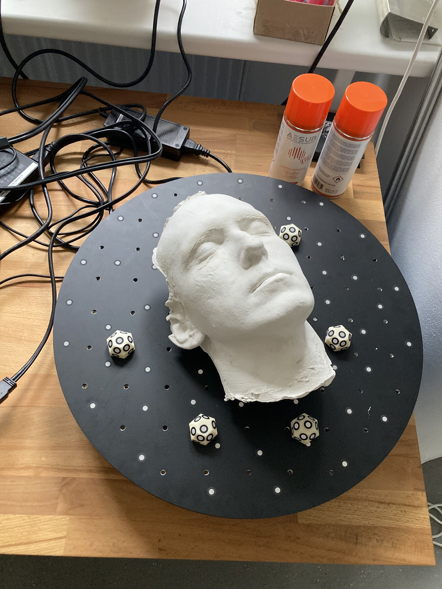
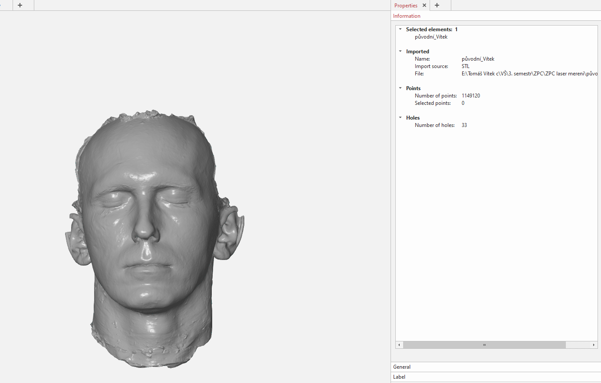
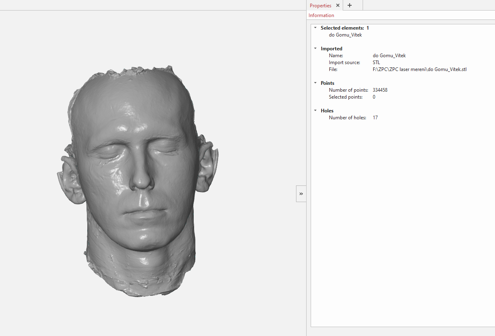
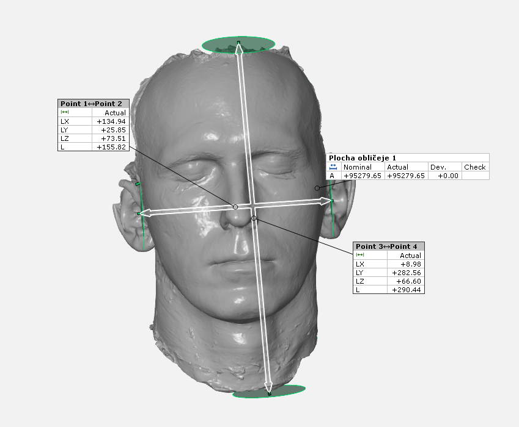

3D skenování byl velmi přínosný projekt. Skenování samotné bylo velmi intuitivní od kalibrace skeneru až po exportování souboru. Vybral jsem si sádrový odlitek obličeje, který byl na skenování jednoduchý, avšak na zpracování dat v GOM Inspect byl trochu těžší pro svůj nepravidelný tvar.
- Intuitivnost
- Praktičnost
- Zábava
Technologie: GOM Inspect, DefinSight, Laserový skener
Díky sádrovému povrchu nebyla potřeba povrchová úprava a ani nalepování extra bodů na díl samotný. Expozici jsem volil poměrně malou a to 1 ms a rozlišení jsem nastavil na 0,3 mm. Výsledný sken jsem uložil jako .stl formát a dále zpracovával v GOMu doma. Zde je původní sken.
Prvně jsem zadělal nižší desítky otvorů po skenování, rozumně jsem zmenšil počet polygonů a pak se vrhl na vyhodnocování rozměrů. Zde je upravená síť, pozorujte hladší povrch.
Celkovou plochu dílu jsem zjistil na 95279,648 mm². Zjišťování maximálního rozměru jsem dělal následovně: Vytvořil jsem opsanou kouli modelem, vytipoval kritické vyčnívající body, označil jsem tyto body, změřil jejich vzájemnou vzdálenost, vyhodnotil tu největší a zobrazil její hodnotu. Jako měření libovolné vzdálenosti jsem si vybral vzdálenost ušních chrupavek latinsky označovaných jako Tragus. Zde je obrázek se štítky s hodnotami.
Ze štítků nás zajímá vzdálenost “L“, která je v milimetrech a plocha “A“, která je v mm².